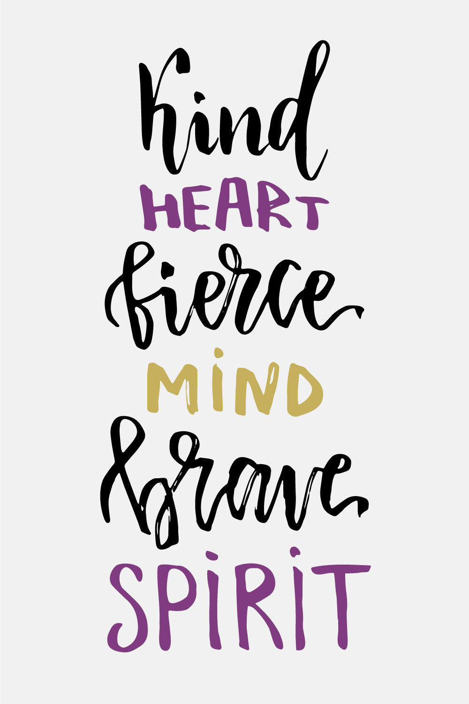

My stepfather died suddenly of a heart attack at 47. My heart was so full of grief and sorrow. Three weeks later I had contracted two viruses: five days of 105° fever, blurred vision, aches in every inch of my body. I ended up on the floor of my living room in excruciating pain, riddled with fear that I was going to die alone.
Suddenly, I was guided to bring white light into my body. I became connected to the entire universe, and felt one with everyone and everything.
That day was the turning point of clearly knowing that there is a gift in everything that happens. Since then I have had a very strong passion to share this truth: our connection to each other and to all of life is full of unlimited gifts, opportunities and love.
Playful. Powerful. Loving. That is how I coach, and it is what comes out in you.